0. 业务规则与容量假设
0.1 业务规则（硬约束）
| 事项 | 规则 |
|---|---|
| 库存来源 | 独享配额（平台记账）/ 共享库存（库存方记账），每家酒店同一时间只用一种 |
| 住宿区间 | 酒店当地营业日，入住日起算、离店日不占库存；一单一酒店一房型，多间多晚，逐晚全满足才整单占房 |
| 查询承诺 | 城市列表允许短时滞后；详情实时查库存方；占房成功才生成支付入口 |
| 预订成功 | 截止前支付成功 且 库存方确认成功，才返回预订成功；支付到期后核实付款结果，支付单已关闭且未付款才关单释放 |
| 订单取消 | 按预订时快照的取消规则整单取消，原库存方回补各晚，取消成功后衔接退款 |
| 库存粒度 | 房型 × 营业日的间数，房号由酒店履约时分配 |
0.2 容量与时效假设（用于选型和压测验收）
| 估算项 | 目标与依据 |
|---|---|
| 数据规模 | 3000 酒店 × 8 房型 × 365 天 ≈ 876 万行日历库存；列表可售投影表同量级 |
| 查询峰值 | 列表 1200 QPS + 详情 300 QPS；P95 列表 ≤ 200ms（平台侧），P95 详情 ≤ 1s（整条链路，共享受库存方制约） |
| 占房峰值 | 全站 100 单/秒；另验证单家热门酒店 50 单/秒集中在同房型同日期。平均 3 晚 → 约 300 行更新/秒，确认与释放另计 |
| 列表时效 | 95% 的库存变化 60 秒内反映到列表；某 (房型,日期) 无法确认同步到最近 60 秒内，就暂时退出"有房"筛选，补齐后恢复 |
| 支付窗口 | 开放支付后 10 分钟，且不超过占房保留期结束前 2 分钟（取较早值，见 §4.4） |
| 单笔上限 | 连住 ≤ 30 晚，控制单事务锁行数 |
规模结论：写入天然分散在 (房型,日期) 粒度，常态单行并发个位数；这不是秒杀系统，平台账本用 MySQL 事务即可，复杂度预算应花在共享库存方适配与列表投影管道上。
1. 系统架构图
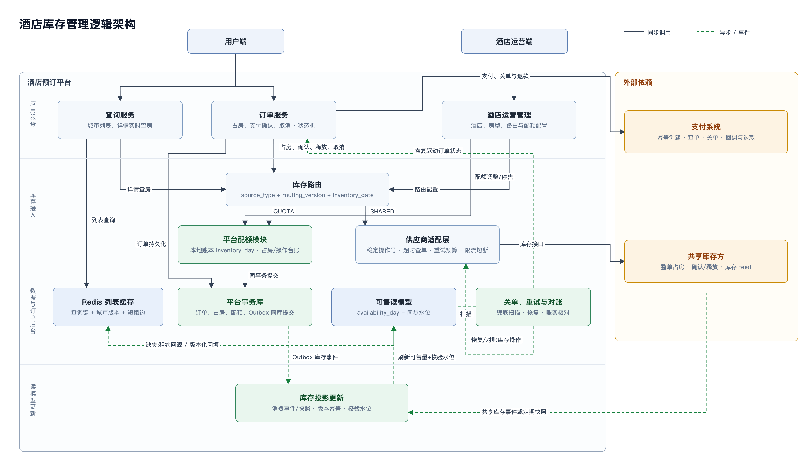
要点：
- 统一库存门面：交易服务只面对
queryAvailability / hold / confirm / release / cancel五个语义接口，来源差异封装在路由与适配层，订单状态机对两种来源同构。 - 平台占房台账对两种来源都记：独享来源它是账本的一部分（同事务写入）；共享来源它是外部占房的镜像，用于统一状态机、释放路由和对账。共享来源以库存方为准，镜像最终一致。
- 订单固化来源 + 路由版本：取消/确认/释放回补到"原库存方"，不受酒店后续切换影响；切换协议见 §4.3。
- 读写分离的投影管道：列表不直接查库存账本，而是消费 outbox 事件和供应商库存 feed，维护按城市组织的可售投影表 + Redis 缓存，用同步水位保证时效承诺（§4.5）。
2. 核心业务流程
2.1 查询流程（分级一致性承诺）
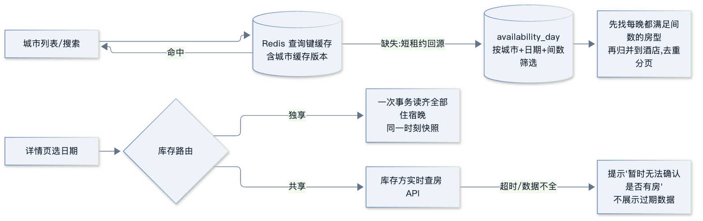
- 列表匹配语义：全程可售 = 各晚可售的最小值。例如搜 2 间连住 2 晚：
| 房型 | 第 1 晚可售 | 第 2 晚可售 | 全程可售 | 匹配？ |
|---|---|---|---|---|
| 大床房 | 3 | 1 | 1 | 否 |
| 双床房 | 1 | 3 | 1 | 否 |
两种房型都只有一晚满足，该酒店不匹配——不能把"某晚有房"当成"整段有房"。
- 列表允许短时滞后（规则明确），但滞后有上限：同步水位超过 60 秒的 (房型,日期) 退出有房筛选（§4.5）。
- 详情是实时承诺：独享读本地主库（一次读齐所有晚，保证同一时刻），共享实时外呼；失败降级为"确认中"而非旧数据。
- 提交订单时的占房结果是唯一权威判定，查询与占房之间的房态变化以占房失败 + 明确提示兜底。
2.2 预订主流程（占房 → 支付 → 确认）
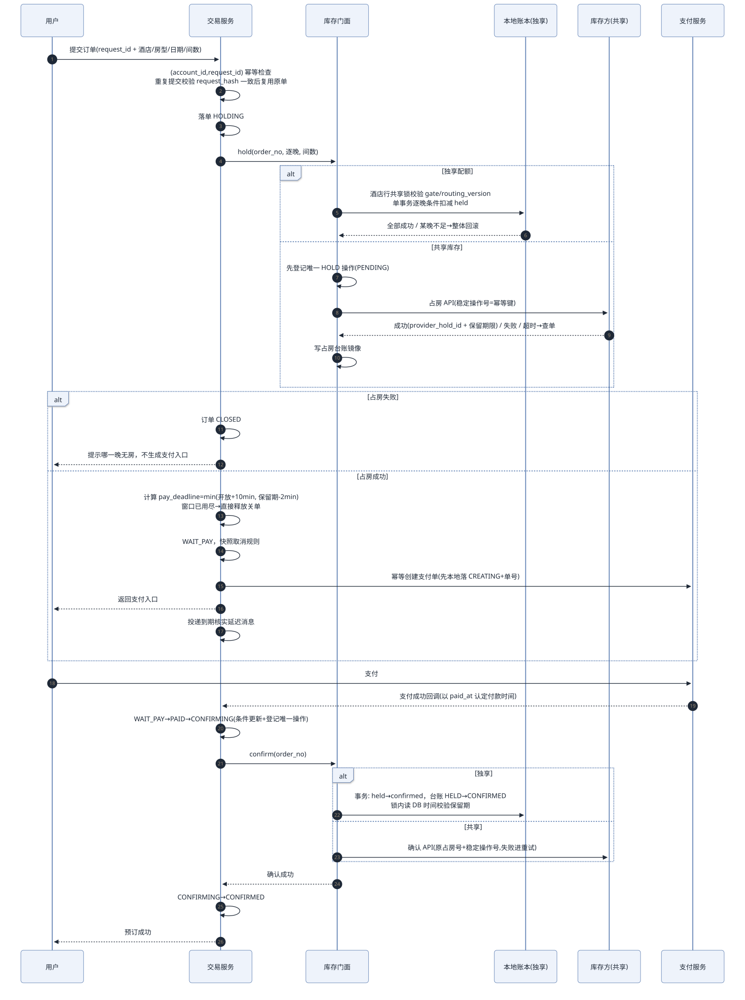
关键语义：
- 占房成功是支付入口的前置条件（规则要求）。独享：订单+库存+台账同事务原子提交；共享：先落 HOLDING 单和 PENDING 操作再外呼，崩溃后可按操作号找回结果。
- 支付成功 ≠ 预订成功。共享确认是外部调用，存在"已付款未确认"窗口：异步重试 + 终态失败补偿（释放+退款），绝不静默丢弃，也不向用户展示假成功。
- 支付截止取两个时点的较早值（§4.4），从结构上避免"付款成功但占房保留期已过"。
2.3 订单状态机
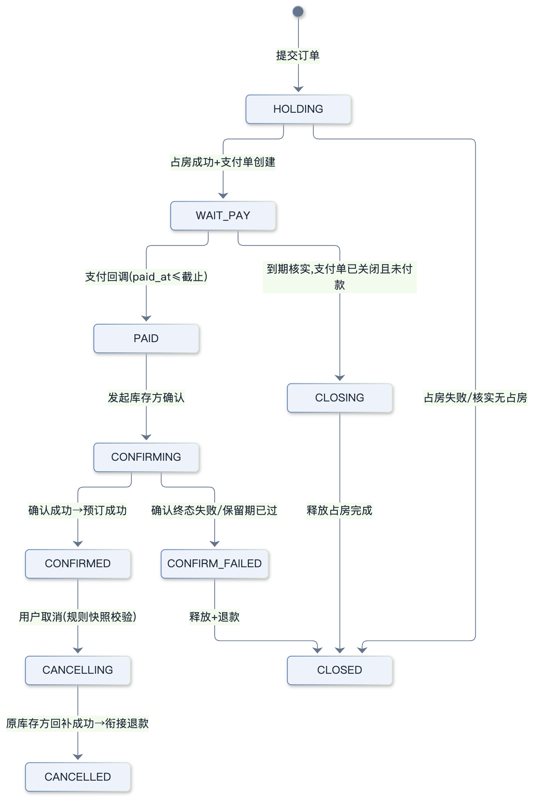
所有状态迁移用条件更新：UPDATE orders SET status=新, version=version+1 WHERE order_id=? AND status=旧 AND version=?，affected=1 才继续，并在同一事务登记唯一操作号。这是支付回调 vs 超时关单、用户取消 vs 确认重试等一切并发竞争的裁决点。迟到结果不得回退已确认/已关闭的终态；若迟到结果仍涉及资金或库存（如释放后核实到已付款），进对账/退款补偿而非改状态。
2.4 支付到期核实流程（不是"到点就释放"）
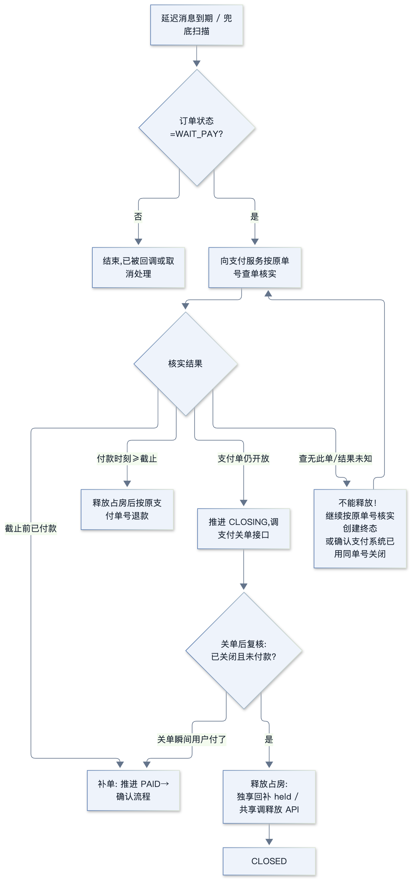
规则要求"确认支付单已关闭且未付款"才释放，所以到期动作是查单 → 关单 → 复核 → 释放四步。特别注意支付单创建未决：创建响应丢失时"查无此单"不能决定释放——创建请求可能仍在途。必须确认创建终态失败，或支付系统已用同一单号完成关闭（关闭能阻止迟到创建重新开单），才允许释放。
2.5 取消流程
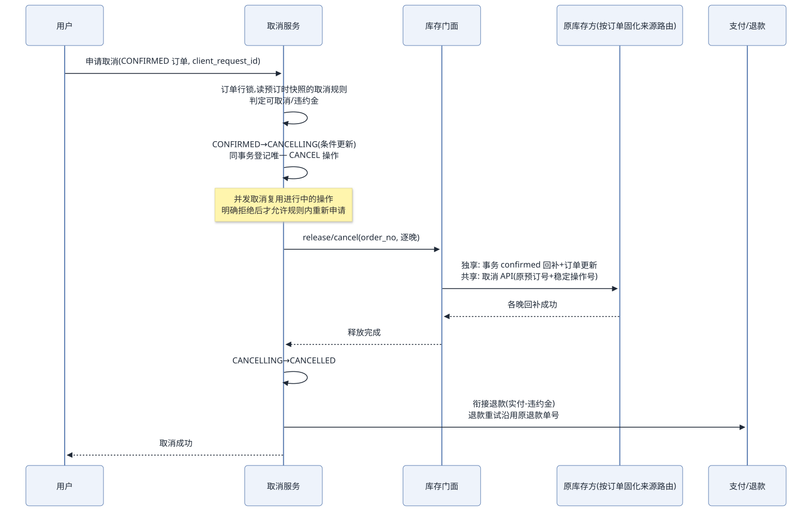
- 整单取消（规则约束），回补只有"逐晚全量"一种，无 partial 状态。
- 先回补库存、后退款：回补失败进重试任务，退款不发起；退款进度单独记录，重试沿用原退款单号防重复退款。
- 回补路由到订单固化的原库存方 + 原路由版本。
3. 核心数据模型
3.1 ER 关系
3.2 通用约定
- MySQL 8.0 / InnoDB。
DATE= 酒店当地营业日；DATETIME(3)统一存 UTC；到期判定在锁内读数据库时间，不信任应用时钟。 - 外部编号、来源标识、请求号用
utf8mb4_0900_bin排序规则，大小写精确匹配。 - 字段默认非空；数据库 CHECK 约束兜底：
held + confirmed <= quota、check_out > check_in、rooms > 0。 - 投影表（availability_day）可独立部署，通过酒店/房型编号关联，不与账本争抢主库资源。
3.3 表结构（DDL）
-- 酒店：库存来源是酒店级配置，同一时间只有一种
CREATE TABLE hotel (
hotel_id BIGINT UNSIGNED PRIMARY KEY COMMENT '平台酒店 ID',
hotel_name VARCHAR(128) NOT NULL COMMENT '酒店名称,列表与详情展示',
city_id BIGINT UNSIGNED NOT NULL COMMENT '城市 ID,列表搜索分组',
time_zone VARCHAR(64) NOT NULL COMMENT 'IANA 时区,营业日换算',
source_type VARCHAR(16) NOT NULL COMMENT 'QUOTA / SHARED',
source_id VARCHAR(48) NOT NULL COMMENT '路由标识:供应商账号或 PLATFORM',
external_hotel_id VARCHAR(128) NULL COMMENT 'SHARED 必填',
routing_version BIGINT UNSIGNED NOT NULL DEFAULT 1 COMMENT '来源每次重开递增',
inventory_gate VARCHAR(16) NOT NULL DEFAULT 'OPEN' COMMENT 'OPEN/SWITCHING',
status VARCHAR(16) NOT NULL COMMENT 'ACTIVE/INACTIVE',
UNIQUE KEY uk_ext (source_id, external_hotel_id),
KEY idx_city (city_id, status, hotel_id)
);
CREATE TABLE room_type (
hotel_id BIGINT UNSIGNED NOT NULL COMMENT '所属酒店 ID',
room_type_id BIGINT UNSIGNED NOT NULL COMMENT '酒店内房型 ID',
room_type_name VARCHAR(128) NOT NULL COMMENT '房型名称,详情展示',
external_room_type_id VARCHAR(128) NULL COMMENT 'SHARED 必填',
status VARCHAR(16) NOT NULL COMMENT 'ACTIVE/INACTIVE,房型是否上架',
PRIMARY KEY (hotel_id, room_type_id),
UNIQUE KEY uk_ext_rt (hotel_id, external_room_type_id)
);
-- 独享配额日历库存：房型 × 营业日 一行
-- 可售 = quota - held - confirmed（派生，不落库）
CREATE TABLE inventory_day (
hotel_id BIGINT UNSIGNED NOT NULL COMMENT '酒店 ID',
room_type_id BIGINT UNSIGNED NOT NULL COMMENT '房型 ID',
stay_date DATE NOT NULL COMMENT '酒店当地营业日',
quota SMALLINT UNSIGNED NOT NULL COMMENT '酒店留给平台的独享间数',
held SMALLINT UNSIGNED NOT NULL DEFAULT 0 COMMENT '已占未确认',
confirmed SMALLINT UNSIGNED NOT NULL DEFAULT 0 COMMENT '已确认未取消',
sales_paused BOOLEAN NOT NULL DEFAULT FALSE COMMENT '暂停新占房,存量仍可处置',
version BIGINT UNSIGNED NOT NULL DEFAULT 0 COMMENT '投影防旧覆盖新',
PRIMARY KEY (hotel_id, room_type_id, stay_date),
KEY idx_hotel_date (hotel_id, stay_date),
CHECK (held + confirmed <= quota)
);
-- 平台占房台账：两种来源统一记录，逐晚一行
-- 独享=账本组成部分(同事务)；共享=外部占房镜像(最终一致)
CREATE TABLE inventory_hold (
hold_id BIGINT UNSIGNED PRIMARY KEY COMMENT '占房台账行 ID',
order_id BIGINT UNSIGNED NOT NULL COMMENT '所属订单 ID',
hotel_id BIGINT UNSIGNED NOT NULL COMMENT '酒店 ID',
room_type_id BIGINT UNSIGNED NOT NULL COMMENT '房型 ID',
stay_date DATE NOT NULL COMMENT '住宿营业日,逐晚一行',
rooms SMALLINT UNSIGNED NOT NULL COMMENT '该晚占用间数',
source_type VARCHAR(16) NOT NULL COMMENT '下单时固化的库存来源 QUOTA/SHARED',
source_id VARCHAR(48) NOT NULL COMMENT '下单时固化的路由标识',
status VARCHAR(16) NOT NULL COMMENT 'HELD/CONFIRMED/RELEASED',
expires_at DATETIME(3) NOT NULL COMMENT '库存承诺的保留期限',
UNIQUE KEY uk_order_date (order_id, stay_date),
KEY idx_status_expire (status, expires_at)
);
CREATE TABLE booking_order (
order_id BIGINT UNSIGNED PRIMARY KEY COMMENT '平台订单 ID',
account_id BIGINT UNSIGNED NOT NULL COMMENT '预订用户 ID',
request_id VARCHAR(64) NOT NULL COMMENT '下单幂等请求号',
request_hash BINARY(32) NOT NULL COMMENT '参数指纹,复用前校验一致',
hotel_id BIGINT UNSIGNED NOT NULL COMMENT '酒店 ID',
room_type_id BIGINT UNSIGNED NOT NULL COMMENT '房型 ID',
check_in DATE NOT NULL COMMENT '入住营业日,含当晚',
check_out DATE NOT NULL COMMENT '离店日不占库存',
rooms SMALLINT UNSIGNED NOT NULL COMMENT '全程每晚预订间数',
source_type VARCHAR(16) NOT NULL COMMENT '下单时固化',
source_id VARCHAR(48) NOT NULL COMMENT '下单时固化的路由标识',
routing_version BIGINT UNSIGNED NOT NULL COMMENT '下单时的路由版本,取消回补路由用',
external_hold_id VARCHAR(128) NULL COMMENT '供应商占房号',
external_booking_id VARCHAR(128) NULL COMMENT '供应商确认后的预订号',
status VARCHAR(24) NOT NULL DEFAULT 'HOLDING' COMMENT '订单状态机状态,见 §2.3',
version BIGINT UNSIGNED NOT NULL DEFAULT 0 COMMENT '状态条件更新乐观版本',
amount BIGINT NOT NULL COMMENT '分',
cancel_policy_snapshot JSON NOT NULL COMMENT '预订时快照的取消规则',
pay_deadline DATETIME(3) NULL COMMENT '两个截止取较早值',
created_at DATETIME(3) NOT NULL DEFAULT CURRENT_TIMESTAMP(3) COMMENT '订单创建时间,UTC',
UNIQUE KEY uk_req (account_id, request_id),
KEY idx_status_deadline (status, pay_deadline, order_id),
KEY idx_route (hotel_id, routing_version, status, order_id),
CHECK (check_out > check_in AND rooms > 0)
);
-- 操作台账：每个业务动作一条，技术重试沿用原操作号
CREATE TABLE inventory_operation (
operation_id CHAR(26) PRIMARY KEY COMMENT '稳定操作号,重试/查单复用',
order_id BIGINT UNSIGNED NOT NULL COMMENT '操作所属订单 ID',
action VARCHAR(16) NOT NULL COMMENT 'HOLD/CONFIRM/RELEASE/CANCEL',
attempt_no SMALLINT UNSIGNED NOT NULL DEFAULT 1 COMMENT '新业务申请才递增',
client_request_id VARCHAR(64) NULL COMMENT '识别重复取消请求',
request_payload JSON NOT NULL COMMENT '发出请求时的完整参数快照',
status VARCHAR(16) NOT NULL DEFAULT 'PENDING' COMMENT 'PENDING/SUCCEEDED/FAILED',
external_ref VARCHAR(128) NULL COMMENT '供应商返回的操作凭据',
next_retry_at DATETIME(3) NULL COMMENT 'PENDING 操作下次可调度时间',
UNIQUE KEY uk_attempt (order_id, action, attempt_no),
UNIQUE KEY uk_client (order_id, action, client_request_id),
KEY idx_retry (status, next_retry_at, operation_id)
);
-- 支付/退款：账务以支付系统为准，这里记业务号与进度
CREATE TABLE payment_link (
order_id BIGINT UNSIGNED PRIMARY KEY COMMENT '所属订单 ID,一单至多一张支付单',
payment_order_id VARCHAR(64) NOT NULL UNIQUE COMMENT '首次调用前生成,创建/查/关复用',
payment_status VARCHAR(16) NOT NULL DEFAULT 'CREATING' COMMENT 'CREATING/待支付/已支付/已关闭未支付',
paid_at DATETIME(3) NULL COMMENT '支付系统认定的有效付款时刻',
refund_id VARCHAR(64) NULL UNIQUE COMMENT '退款重试复用,防退两次',
refund_status VARCHAR(16) NULL COMMENT '退款进度,账务以支付系统为准'
);
-- outbox：与库存变更同事务落库，可靠投递
CREATE TABLE outbox (
event_id BIGINT UNSIGNED PRIMARY KEY COMMENT '稳定事件号,重复投递时下游去重',
event_type VARCHAR(32) NOT NULL COMMENT '库存变更/路由变更/退款请求',
aggregate_key VARCHAR(128) NOT NULL COMMENT '库存行或订单业务键',
aggregate_version BIGINT UNSIGNED NOT NULL COMMENT '业务记录提交后的版本',
payload JSON NOT NULL COMMENT '更新后的总余量+来源版本',
publish_status VARCHAR(16) NOT NULL DEFAULT 'PENDING' COMMENT 'PENDING/已投递',
next_publish_at DATETIME(3) NOT NULL DEFAULT CURRENT_TIMESTAMP(3) COMMENT '投递失败后的下次调度时间',
KEY idx_publish (publish_status, next_publish_at, event_id)
);
-- 列表可售投影：按城市组织的读模型
CREATE TABLE availability_day (
hotel_id BIGINT UNSIGNED NOT NULL COMMENT '酒店 ID',
room_type_id BIGINT UNSIGNED NOT NULL COMMENT '房型 ID',
stay_date DATE NOT NULL COMMENT '营业日',
city_id BIGINT UNSIGNED NOT NULL COMMENT '城市 ID,列表筛选索引键',
sellable SMALLINT UNSIGNED NOT NULL COMMENT '暂停销售时为 0',
source_id VARCHAR(48) NOT NULL COMMENT '产生本行的库存来源',
feed_scope VARCHAR(64) NOT NULL COMMENT '所属同步范围',
routing_version BIGINT UNSIGNED NOT NULL COMMENT '当前库存路由版本',
source_version BIGINT UNSIGNED NOT NULL COMMENT '行数据版本,防旧消息覆盖新数据',
PRIMARY KEY (hotel_id, room_type_id, stay_date),
KEY idx_city_date (city_id, stay_date, sellable, hotel_id, room_type_id)
);
-- 同步水位：一批数据完整更新到了什么时间
CREATE TABLE availability_sync_cursor (
source_id VARCHAR(48) NOT NULL COMMENT '平台或共享库存来源标识',
feed_scope VARCHAR(64) NOT NULL COMMENT '该来源的数据分区/覆盖范围',
cursor_token VARCHAR(128) NULL COMMENT '连续处理到的消息位置/批量编号',
covered_through DATETIME(3) NOT NULL COMMENT '已完整同步的时间边界',
PRIMARY KEY (source_id, feed_scope)
);3.4 模型设计说明
- held / confirmed 分开记：占房（可释放）与确认（只能走取消回补）语义不同，释放只动 held、取消只动 confirmed，守卫条件各自独立，不会误释放已确认库存。CHECK 约束做最后一道兜底。
- 不记房号：售卖粒度是房型 × 营业日的间数，房号留给酒店履约分配，避免排房组合爆炸。
- 操作台账区分业务重试与技术重试：
operation_id稳定不变供外部幂等与查单；attempt_no只在"明确失败后重新申请"时递增（如取消被拒后规则内再申请）。技术重试（超时重发）沿用原操作号，绝不换新号——换号重试是重复占房/重复退款的根源。 - 下单幂等双保险：
uk_req(account_id, request_id)防重复建单，request_hash防同请求号换参数（返回参数冲突而非静默复用）。 - 投影与账本分离：availability_day 是只读物化视图，版本字段防旧消息覆盖新数据；它错了不影响交易正确性，只影响列表时效，可独立重建。
- 取消规则、库存来源、路由版本都快照在订单上：履约判定用预订时的版本，不受后续配置变化影响。
4. 关键技术方案
4.1 独享配额：跨晚整单扣减
可售间数 = quota − held − confirmed。 占房事务的完整加锁协议：
1. SELECT ... FOR SHARE 锁酒店行
→ 校验 inventory_gate=OPEN、routing_version 与请求一致、status=ACTIVE
（共享锁允许并发占房，但阻塞来源切换的排他锁，见 §4.3）
2. 按 request_id 创建或复用订单/占房台账（复用前校验 request_hash）
3. 锁订单行、占房台账行
4. 按 stay_date 升序逐晚锁库存行并条件扣减：UPDATE inventory_day
SET held = held + #{rooms}, version = version + 1
WHERE hotel_id = #{h} AND room_type_id = #{rt} AND stay_date = #{d}
AND sales_paused = FALSE
AND quota - held - confirmed >= #{rooms};
-- affected=0 → 该晚不足 → 整个事务回滚，各晚维持原值，返回失败晚明细5. 全部晚通过 → 同事务提交：库存、占房明细、订单状态、outbox 事件
6. 事务内无任何 RPC，锁持有时间 = 几条本地 SQL以 2 间连住 3 晚为例，第二晚不足，三晚都维持原值（无部分扣减）：
| 营业日 | 占房前可售 | 本单需要 | 占房失败后可售 |
|---|---|---|---|
| 第 1 晚 | 3 | 2 | 3 |
| 第 2 晚 | 1 | 2 | 1 |
| 第 3 晚 | 4 | 2 | 4 |
四种动作的一致性条件（全部在统一锁序内执行，锁内读 DB 时间判定到期）：
| 动作 | 每晚库存变化 | 一致性条件 |
|---|---|---|
| 占房 HOLD | held += rooms | 每晚有库存行、允许销售、余量充足；gate/routing 校验通过 |
| 确认 CONFIRM | held -= rooms, confirmed += rooms | 台账仍 HELD（状态闸门）且 DB 时间未过保留期；可售量不变 |
| 释放 RELEASE | held -= rooms | 台账仍 HELD，且已选定关单分支或已到保留期 |
| 取消 CANCEL | confirmed -= rooms | 台账 CONFIRMED，满足预订时快照的取消规则 |
确认/释放/取消的闸门 SQL 模式（两步同事务）：
UPDATE inventory_hold SET status='CONFIRMED'
WHERE order_id=#{o} AND stay_date=#{d} AND status='HELD';
-- affected=1 才执行：
UPDATE inventory_day SET held = held - #{rooms}, confirmed = confirmed + #{rooms},
version = version + 1
WHERE hotel_id=#{h} AND room_type_id=#{rt} AND stay_date=#{d} AND held >= #{rooms};任何重复请求、迟到请求都被台账状态闸门挡下——这是"超时释放 vs 支付确认"竞争的最终解法。
配额调整走同一行锁：新配额必须 ≥ held + confirmed，否则拒绝；酒店确需缩量时，将受影响日期 sales_paused=TRUE（停止新占房，存量占房/订单仍按规则处置），转履约侧协商。
死锁预防：全链路（占房/确认/释放/取消/到期任务/配额调整）统一按 酒店 → 订单 → 台账 → 库存行(日期升序) 加锁。死锁仍发生时（InnoDB 检测回滚），用原 request_id 限次重试、随机退避。
4.2 共享库存：跨系统结果恢复
供应商准入条件（接入时逐家能力认证，不达标不开放预订）：
1. 跨晚整单原子占房（全满足或全失败）； 2. 明确的占房保留期限； 3. 用原占房号确认/释放，整单取消； 4. 用原操作号查结果； 5. 重发同一操作只生效一次（外部幂等）。
能力未达标的供给：转为独享配额模式接入，或暂停预订。不做"逐晚占房+失败补偿"的降级适配——补偿窗口内其他渠道仍在售，平台无法单方面保证不超卖（取舍见 §6）。
结果恢复矩阵（核心纪律：超时 ≠ 失败，换号重试 = 事故）：
| 场景 | 平台动作 |
|---|---|
| 供应商成功，平台写入中断 | 按 operation_id 查单找回结果，再更新本地订单/台账；HOLDING 超时单由兜底扫描驱动 |
| 响应超时、结果未知 | 操作保持 PENDING，用同一操作号查单或重试，直到可核实的终态 |
| 查到占房成功，但订单已无法开放支付（窗口用尽/已关单） | 释放迟到的占房；确认供应商无占房/已释放/已到期后关闭订单 |
| 确认终态失败（保留期已过等） | 已付款 → 按原支付单号登记唯一退款 + outbox 事件，同事务提交；未付款 → 关单 |
| 已确认订单取消 | 订单行锁推进 CANCELLING，同事务登记唯一 CANCEL 操作；并发取消复用进行中操作；供应商明确拒绝后才允许规则内重新申请（attempt_no+1） |
| 供应商限流/故障 | 按供应商独立线程池 + 并发上限 + 重试预算 + 熔断；查房降级"确认中"，占房快速失败不建单 |
对账：定时按外部凭据核对未决/已确认/已取消订单，平台镜像 vs 库存方账单；监控超期未决数、支付后确认成功率、退款积压。差异自动修复或告警。
4.3 库存来源切换：三步协议
风险：实例读到旧路由后暂停，等新来源开放才继续向旧方占房——同一批客房可能被两边同时售卖。解法是酒店行共享锁/排他锁协调准入与关门 + 路由版本：
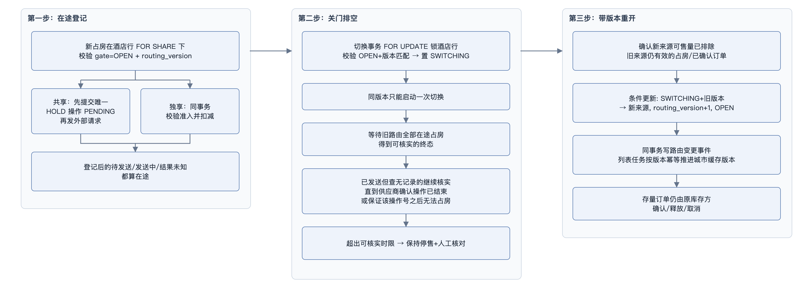
- 读到旧路由的迟到请求：在第一步的共享锁下会被 gate/version 校验拒绝，不可能向旧方登记新占房。
- 切换期间详情和占房按权威路由校验；列表沿用原有时效上限，靠城市缓存版本切换投影数据。
idx_route(hotel_id, routing_version, status, order_id)支撑旧路由在途订单扫描。
4.4 支付：两个截止时间与未决恢复
pay_deadline = min(开放支付时刻 + 10min, 占房保留期 expires_at − 2min)。
- 独享：平台自定保留期（如 15min），窗口实际取 10min；
- 共享：保留期由库存方承诺决定，供应商保留期短则支付窗口相应缩短——共享库存的实际保留承诺决定可发放的支付窗口；
- 窗口已用尽（计算结果 ≤ 当前时间）：直接释放占房关单，不出支付入口。
- 2 分钟缓冲用于支付回调传播 + 确认调用，从结构上消灭"付款成功但占房已过期"。
创建与关单的未决恢复：
| 环节 | 纪律 |
|---|---|
| 创建支付单 | 同一事务先落 payment_order_id + CREATING，再按原单号幂等调用支付系统；创建结果未知时按原单号继续核实，不换新单号 |
| 到期关单 | 先推进订单到 CLOSING（支付入口只对待支付状态开放），再调支付关单；单次"查无此单"不能决定释放——需确认创建终态，或支付系统已用同一单号完成可阻止迟到创建的关闭 |
| 回调 vs 关单 | 以支付系统权威结果为准，按预期状态+订单版本条件更新；选定确认或释放分支时同事务登记唯一操作号；任务中断按原操作恢复 |
| 迟到结果 | 不得回退已确认/已关闭状态；释放后核实到已付款 → 按支付单号登记唯一退款 + outbox，同事务提交 |
| 到期与确认竞争（独享） | 到期任务与确认操作按同一锁序（订单→台账→库存行）加锁，取得锁后读 DB 时间判定；到期仍未确认的占房原子释放；共享以库存方终态为准 |
核实结果分支汇总：
| 核实结果 | 库存与订单动作 |
|---|---|
| 截止前已付款（通知可能迟到） | 按 paid_at 认定，确认原占房；库存确认成功后才告知预订成功 |
| 支付单已关闭且未支付 | 释放原占房，完成关单 |
| 付款时刻 ≥ 截止 | 结束占房后按原单号退款 |
| 保留期已过、库存方明确未确认 | 预订失败；已付款则退款 |
| 支付/确认/释放结果未知 | 订单保持处理中，按原单号查到最终结果再继续 |
4.5 城市列表：可售投影管道与缓存
列表不查账本，查按城市组织的可售投影，管道如下：
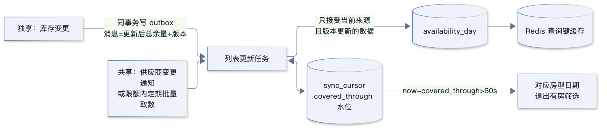
投影更新规则：
| 输入状态 | 处理 |
|---|---|
| 平台库存变更 | 同事务写 outbox，发送更新后的总余量（"还剩 2 间"而非"减 1"），重复送达按版本只生效一次——天然幂等、乱序安全 |
| 共享库存更新 | 接收供应商通知；无通知能力的在调用频率上限内定期批量取数 |
| 重复/旧版本/旧来源 | 只接受属于当前 source_id 且 source_version 更新的数据 |
| 发现缺漏 | 该范围水位停在最后一个确认完整的位置，用带版本的完整快照覆盖缺口；投影持久化且范围连续完整后才推进水位 |
| 同步落后 > 60s | 对应 (房型,日期) 退出有房筛选；详情仍实时查库存方 |
水位语义：记录的是"一批数据完整更新到了什么时间"。某房型很久没变化没关系，只要这批数据仍完整，就继续参与筛选。
缓存击穿防护（短租约，不是分布式锁）：
- 查询键 = 城市 + 日期区间 + 间数 + 筛选条件 + 分页 + 城市缓存版本；
- 缺失时
SET leaseKey token NX PX ttl取短租约：持有者再读一次缓存，仍缺失才批量查投影库；其余实例限时等待后重读缓存； - 回填写入用 Lua 原子校验持有者令牌 + 城市缓存版本再写入并释放租约——旧持有者不能覆盖新结果、不能误删新租约；
- 同一城市的版本键、租约键、数据键用相同 Redis hash tag，保证集群同 slot；
- 缓存绝对到期时间受数据水位约束（不卖超过时效承诺的旧数据）；
- Redis 异常或等待超时：启用受限回源（并发上限）+ 降级。租约只是限流优化，库存正确性始终由 MySQL 事务或库存方保证，Redis 丢租约最多导致有限重复查库，不会超卖。
5. 高并发问题与验证
每项按 风险 → 处理 → 验证 组织。验证需用真实 MySQL/Redis/支付系统/供应商接口做并发与故障注入，不是纸面推演。
5.1 超卖与跨晚部分扣减
- 风险：两单同时看到最后一间房；连住单只扣了部分日期。
- 处理：多实例通过同一 MySQL 主库行锁协调，单事务逐晚校验+扣减（§4.1）；共享交给覆盖全渠道的库存方整单占房。
- 验证：≥2 台订单服务实例同时接收 100 笔不同请求，抢两晚各剩 1 间的同房型 → 恰 1 单成功、两晚各占 1 间；再让两单日期部分重叠 → 重叠晚仍最多 1 单成功；任一晚不足 → 整单失败且各晚库存维持原值。共享另用两个销售渠道同时抢订验证。
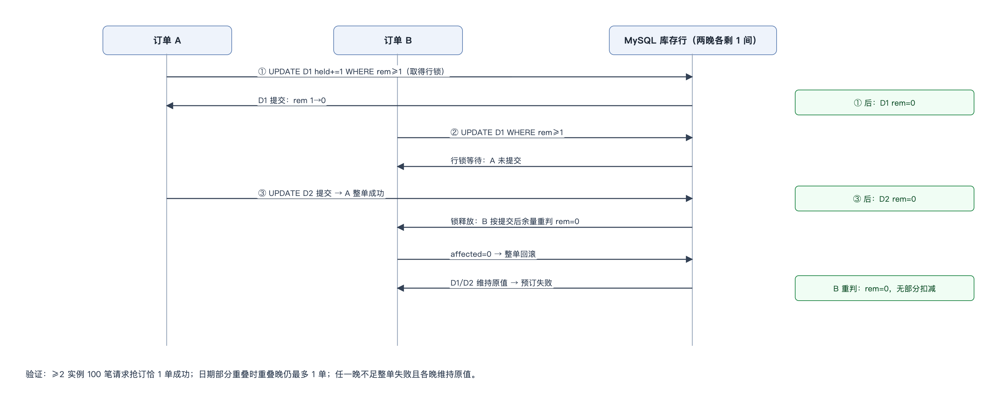
5.2 热门房型锁等待与死锁
- 风险：大量订单命中同房型同日期，行锁等待拉长 RT；加锁顺序不一致引发死锁。
- 处理：事务内纯 SQL 缩短锁持有；统一锁序；死锁/锁超时用原请求号限次重试+随机退避；单酒店并发请求数上限、单供应商调用并发上限。
- 验证：对同一热门房型施加 50 单/秒，同时保持其他酒店流量。记录锁等待时间、重试比例、成功 TPS、P99 耗时，并确认其他酒店下单不受影响。（估算：50 单/秒 × 单事务锁持有 ~5ms ≈ 25% 单行锁利用率，可承载；若实测恶化再启用 §6 演进路径。）
5.3 重复请求、回调与消息
- 风险：客户端重试、支付回调重发、事件重复投递 → 重复占房/回补/退款。
- 处理：下单、库存操作、支付、退款各用稳定业务号 + 唯一键 + 状态条件更新；同请求号复用前校验参数指纹。
- 验证：并发重复发送相同下单/付款通知/取消请求 → 每个业务动作只生效一次，订单与各晚库存一致；同请求号换房型/日期 → 返回参数冲突。
5.4 付款确认与超时关单同时发生
- 风险：付款已成功但超时任务先到，误释放有效订单；或释放瞬间用户付款。
- 处理：先核实支付终态和 paid_at，再按订单版本条件更新选定分支（§4.4）；确认与到期由库存方/DB 时间判定终态。
- 验证：分别模拟 ①截止前付款但回调迟到 ②已关支付单且未付款 ③付款成功但占房先到期 → 期望分别为只确认一次、只释放一次、只退款一次。另模拟支付单创建响应丢失、关单与创建交错、选定分支后实例退出 → 验证可恢复，且支付系统不会让迟到创建重新打开已关支付单。
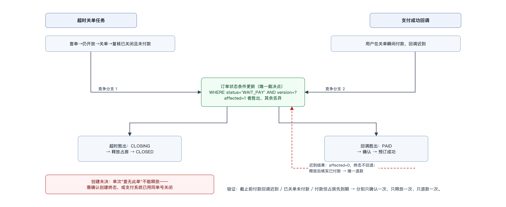
5.5 供应商超时、限流或通知晚到
- 风险：供应商已占房但平台收到超时，换号重试 → 重复占房；迟到结果覆盖已定状态。
- 处理：按供应商设等待时限/并发上限/重试预算；结果未知按原操作号查到终态再推进；查房失败提示"暂时无法确认"。
- 验证：模拟供应商已占房但平台没收到回复后重启 → 保留期内按操作号找回原占房，库存/订单/资金按编号对上；模拟限流与通知乱序 → 已定订单结果不被覆盖，其他供应商不受影响。
5.6 列表数据落后与缓存同时过期
- 风险：热查询键缓存同时失效放大读库压力；事件遗漏/乱序让列表展示过期库存。
- 处理：短租约共用一次回源 + Lua 校验令牌与城市版本 + 水位约束绝对到期（§4.5）。
- 验证：多实例同时遇到同键过期 → 健康状态下共用一次查库；模拟持有者卡到租约过期、Redis 故障切换、消息乱序 → 旧持有者无法回填或误删新租约，查库并发仍受限，超 60 秒时效的数据退出有房筛选。
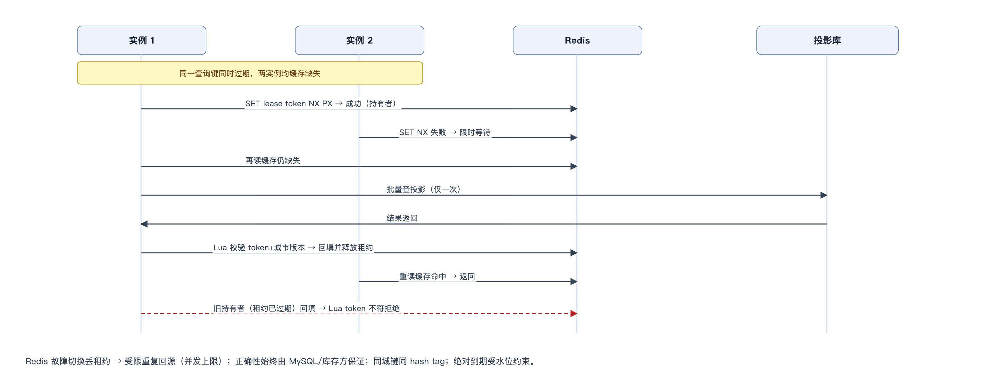
5.7 切换库存来源时的并发提交
- 风险：实例持旧路由暂停后恢复，向旧方占房，新来源同时开卖 → 双卖。
- 处理：酒店行共享锁/排他锁协调准入与关门；旧路由在途占房必须核完终态；新来源扣除旧占用后才开放（§4.3）。
- 验证：实例读旧路由后暂停、切换完成后恢复 → 被拒绝按旧路由登记；请求登记后暂停并尝试切换 → 新来源等这笔核完终态才开放。
5.8 占房悬挂与恶意占座
- 风险：共享占房成功后平台崩溃留下孤儿占房；批量下单不支付锁死热门库存。
- 处理：先落 HOLDING 单+PENDING 操作再外呼；
idx_status_expire/idx_status_deadline支撑兜底扫描；10min 支付窗口 + 单用户待支付订单数限制 + 风控。 - 验证：在"外呼成功、本地提交前"注入进程崩溃 → 扫描任务在保留期内找回并释放或推进；批量占座请求 → 窗口到期全部释放，库存恢复。
5.9 上线观测与对账
- 平台配额：按营业日核对 Σ占房明细 vs held/confirmed 计数；监控配额差异、锁等待、库存写入失败。主库故障切换需验证无双主写入、无已确认事务丢失：切换后同一请求只生效一次，此前已承诺的库存仍可查。
- 共享库存：按外部凭据核对未决/已确认/已取消；监控超期未决数、支付后确认成功率、退款积压。
- 客房查询：按来源跟踪列表更新延迟（P95 ≤ 60s 承诺）、批量回源次数、列表 P95 ≤ 200ms。
6. 设计取舍
6.1 本地库存以 MySQL 条件更新为唯一真相，不上 Redis 预扣
- 选择：独享账本直接 DB 原子扣减；Redis 只做列表读缓存与回源租约。
- 理由：876 万行、写入分散，常态单行并发个位数；热点验证目标 50 单/秒对应约 25% 单行锁利用率，行锁扛得住。Redis+Lua 预扣引入双账本一致、崩溃恢复、对账三套新复杂度，本题规模下是负收益。
- 代价：极端促销热点下 RT 上升。
- 演进路径：真出现秒杀级热点，对该 (房型,日期) 局部启用 Redis 预扣 + 异步落账 + 对账，作为插件而非全局架构。
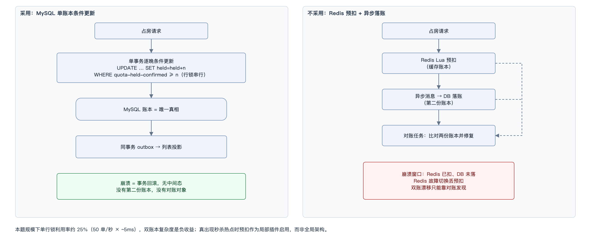
6.2 统一库存门面 + 双实现，而不是两条交易链路
- 选择：交易服务只面对五个语义接口，来源差异封装在路由与适配层。
- 理由：状态机、支付、取消、退款对两种来源同构；两条链路会让补偿逻辑翻倍。
- 代价：共享台账是镜像，存在短暂不一致窗口，必须配对账。接受——规则已明确共享由库存方记账，平台镜像本就不是权威。
6.3 供应商准入认证，不做逐晚占房的降级适配
- 选择：把"跨晚原子占房、明确保留期、原号确认/释放、原号查结果、重发只生效一次"作为接入硬门槛；不达标转独享或暂停预订。
- 理由：逐晚占房+失败补偿的窗口内，其他渠道仍在售，平台单方面无法保证不超卖，且补偿释放本身也可能失败，对账复杂度失控。
- 代价：供给接入摩擦变大，部分长尾供应商无法以共享模式上线。这是用供给广度换正确性确定性。
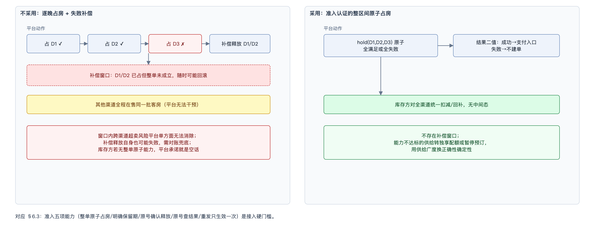
6.4 提交时占房、支付后确认（两阶段），支付窗口与保留期挂钩
- 规则硬性要求，方案照此建模。两个代价各有对冲：占座 → 短窗口+到期核实+占座限制；已付款未确认窗口 → 显式状态+重试+退款补偿。
- pay_deadline 取 min(开放+10min, 保留期−2min)：代价是短保留期供应商的支付窗口被压缩（可能影响转化）；换来"付款成功但占房过期"被结构性堵死。窗口用尽直接关单，不出支付入口。
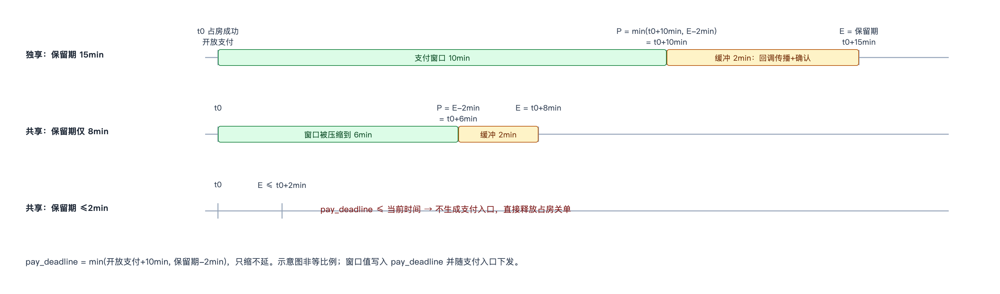
6.5 查询一致性分级 + 独立投影读模型
- 列表 QPS 最高、价值密度最低，规则允许滞后 → 独立投影表 + 缓存 + 水位时效，成本最低且不拖累交易主库。
- 详情实时：独享一次事务读齐全部晚（同一时刻快照），共享实时外呼，失败降级"确认中"。
- 把强一致的钱花在占房这一个点上。投影错了只影响列表体验，可整表重建，不影响资金与库存正确性。
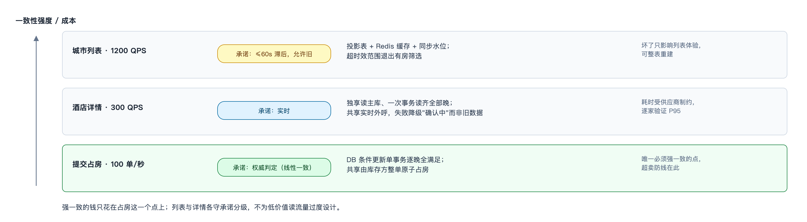
6.6 到期释放走"核实"而非"到点即释放"
- 延迟消息只触发核实；释放前提是查单确认支付单已关闭且未付款（规则要求，也是资损防线）。"查无此单"不能释放（创建可能在途）。
- 代价：多两次支付调用 + CLOSING 中间态；换来最难看的资损被结构性堵死。消息丢失由兜底扫描补偿。
6.7 单库 MySQL + 预留分片，不上分布式存储
- 876 万行、分散写入，单库+读写分离足够；hotel_id 是天然分片键（所有库存操作都带），需要时平滑拆分。投影表可先行独立部署。
- 拒绝一开始就分库分表：运维复杂度前置，收益为零。
6.8 整单取消、单酒店单房型下单
- 规则限定。回补只有逐晚全量一种，无 partial 状态、无部分退款拆分；一次付款对应一个库存来源和一份占房凭据，确认/释放/取消基于同一批日期。用户要多房型需分单。
7. 容量与性能估算（验证取舍成立）
| 项 | 估算 | 结论 |
|---|---|---|
| 日历库存行数 | 3000 × 8 × 365 ≈ 876 万行 | 单表 GB 级，主键单行更新 |
| 占房事务 | ≤30 晚 × 3 条 SQL，纯本地无 RPC | 锁持有毫秒级 |
| 常态写 QPS | 100 单/秒 × 3 晚 ≈ 300 行更新/秒，分散 | 单行竞争可忽略 |
| 热点行 | 50 单/秒 × ~5ms 锁持有 ≈ 25% 利用率 | 可承载，压测验证 P99 |
| 列表读 | 1200 QPS 走缓存+投影，租约防击穿 | P95 ≤ 200ms 可达 |
| 详情读 | 300 QPS：独享读主库；共享受供应商配额约束 | 按供应商限流保护，P95 ≤ 1s 需逐家验证 |
| 兜底扫描 | 状态+到期时间索引范围扫描，分钟级 | 常态待处理量接近 0 |
最终判断：瓶颈不在平台账本，而在共享库存方接口质量与列表同步时效——所以本方案投入最重的三处是：渠道适配层的结果恢复纪律（§4.2）、来源切换协议（§4.3）、投影管道的水位与版本机制（§4.5）。